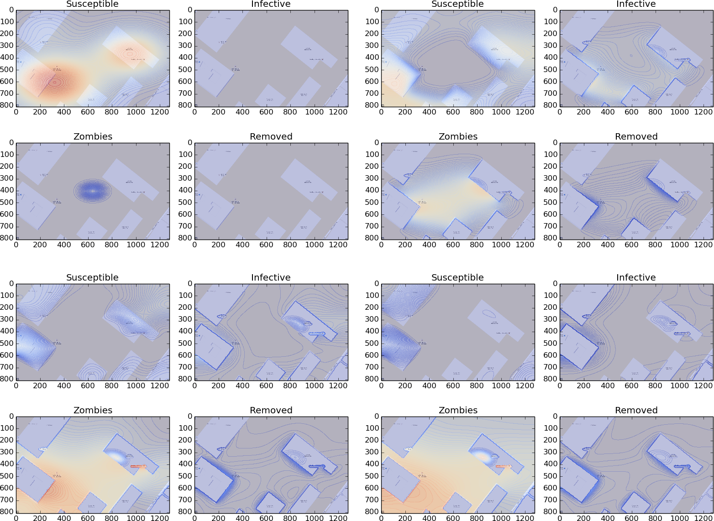
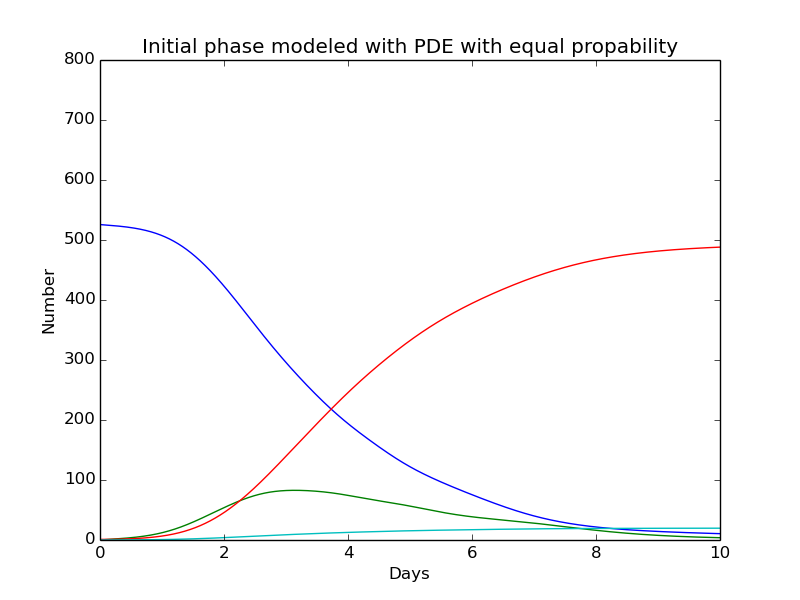
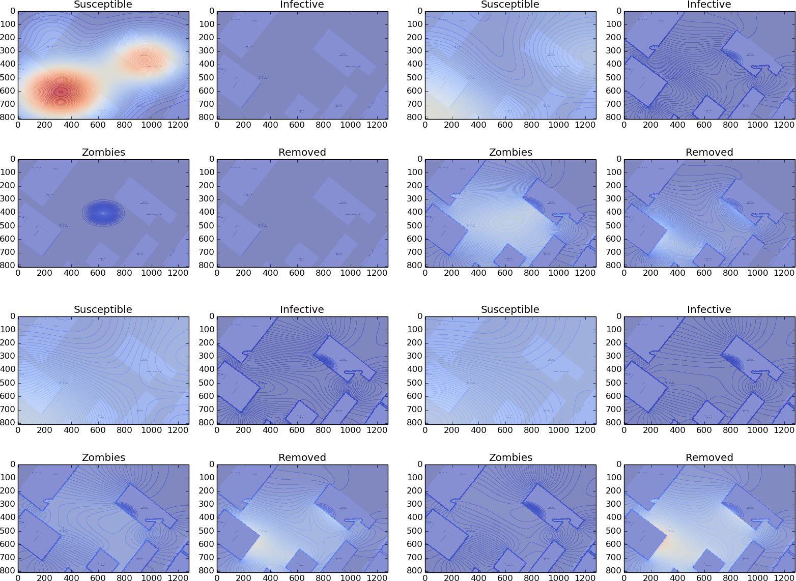
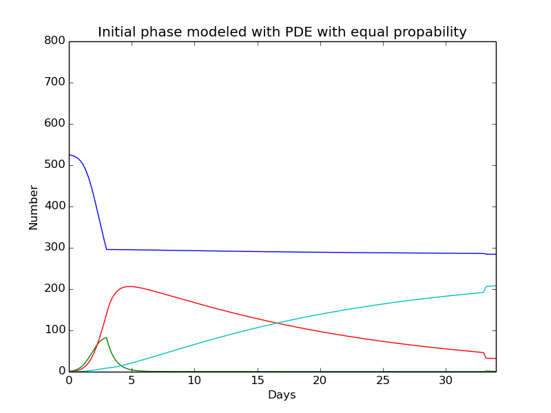

Created with different diffusion constants. The groups of susceptible are placed in three different areas.


Three phases
Created with different diffusion constants. The groups of susceptible are placed in three different areas.


Appendix
Discretization PDE system for a 2D model
The following PDE system from (3) is discretized. Forward Euler is chosen for time derivative and Crank Nicolson for spatial derivative.
$$
\begin{equation}
\begin{aligned}
\frac{S^{n+1}_{i,j}-S^n_{i,j}}{\Delta t} &= -I^{n}_{i,j}S^{n}_{i,j} + \left(\frac{S^{n}_{i-1,j}-2S^{n}_{i,j}+S^{n}_{i+1,j}}{\Delta x}+\frac{S^{n}_{i,j-1}-2S^{n}_{i,j}+S^{n}_{i,j+1}}{\Delta y}\right) \\
\frac{I^{n+1}_{i,j}-I^n_{i,j}}{\Delta t} &= I^{n}_{i,j}S^{n}_{i,j} -\lambda I^{n}_{i,j} + \left(\frac{I^{n}_{i-1,j}-2I^{n}_{i,j}+I^{n}_{i+1,j}}{\Delta x}+\frac{I^{n}_{i,j-1}-2I^{n}_{i,j}+I^{n}_{i,j+1}}{\Delta y}\right) \\
\frac{R^{n+1}_{i,j}-R^n_{i,j}}{\Delta t} &= \lambda I^{n}_{i,j}+\left(\frac{R^{n}_{i-1,j}-2R^{n}_{i,j}+R^{n}_{i+1,j}}{\Delta x}+\frac{R^{n}_{i,j-1}-2R^{n}_{i,j}+R^{n}_{i,j+1}}{\Delta y}\right)
\end{aligned}
\end{equation}
$$
Now the known values can be placed on the right side. The system will then be
$$
\begin{equation}
\begin{aligned}
S^{n+1}_{i,j} &= S^{n}_{i,j}+\Delta t\left(-I^{n}_{i,j}S^{n}_{i,j} + \left(\frac{S^{n}_{i-1,j}-2S^{n}_{i,j}+S^{n}_{i+1,j}}{\Delta x}+\frac{S^{n}_{i,j-1}-2S^{n}_{i,j}+S^{n}_{i,j+1}}{\Delta y}\right)\right) \\
I^{n+1}_{i,j} &= I^{n}_{i,j}+\Delta t\left(I^{n}_{i,j}S^{n}_{i,j} -\lambda I^{n}_{i,j} + \left(\frac{I^{n}_{i-1,j}-2I^{n}_{i,j}+I^{n}_{i+1,j}}{\Delta x}+\frac{I^{n}_{i,j-1}-2I^{n}_{i,j}+I^{n}_{i,j+1}}{\Delta y}\right)\right) \\
R^{n+1}_{i,j} &= R^{n}_{i,j}+\Delta t\left(\lambda I^{n}_{i,j}+\left(\frac{R^{n}_{i-1,j}-2R^{n}_{i,j}+R^{n}_{i+1,j}}{\Delta x}+\frac{R^{n}_{i,j-1}-2R^{n}_{i,j}+R^{n}_{i,j+1}}{\Delta y}\right)\right)
\end{aligned}
\end{equation}
$$
Discretization
$$
\begin{equation} \tag{8}
\begin{aligned}
\frac{dS}{dt} =& \Sigma -\beta SZ - \delta_SS + \nabla(\gamma_s(x)\nabla S) \\
\frac{dI}{dt} =& \beta SZ - \varrho I - \delta_II+\nabla(\gamma_I(x)\nabla I)\\
\frac{dZ}{dt} =& \varrho I- (\alpha+\omega(t))SZ + \zeta R+ \nabla(\gamma_Z(x)\nabla Z)\\
\frac{dR}{dt} =& \delta_SS +\delta_II -\zeta R + (\alpha+\omega(t))SZ
\end{aligned}
\end{equation}
$$
The calculations will be shown for the diffusion part in the first equation. This idea will be used for the whole system
$$
\begin{equation}
\begin{aligned}
\frac{dS}{dt} =& \nabla(\gamma_s(x)\nabla S) \\
\frac{S^{n+1}_{i,j}-S^n_{i,j}}{\Delta t} &= \left(\gamma(x_{i+1/2,j})\frac{S^{n}_{i-1,j}-2S^{n}_{i,j}+S^{n}_{i+1,j}}{\Delta x}+\frac{S^{n}_{i,j-1}-2S^{n}_{i,j}+S^{n}_{i,j+1}}{\Delta y}\right)
\end{aligned}
\end{equation}
$$